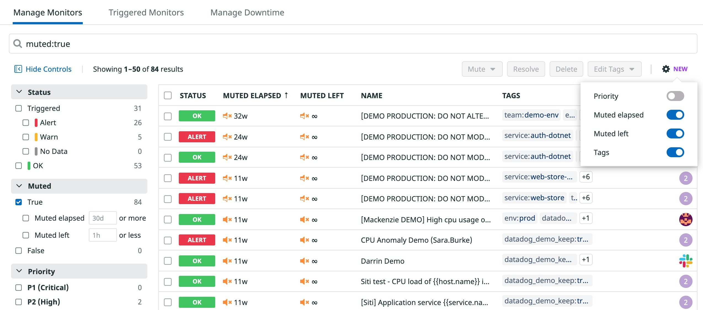
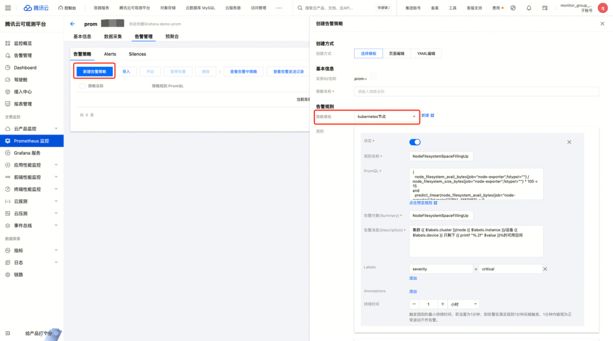
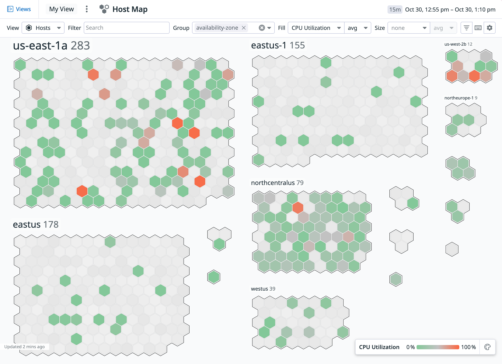
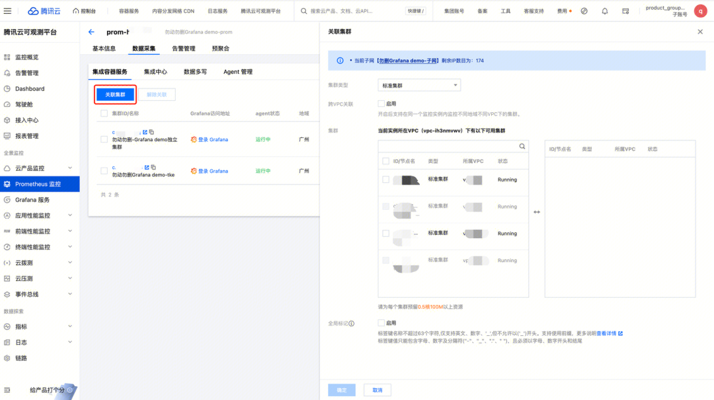
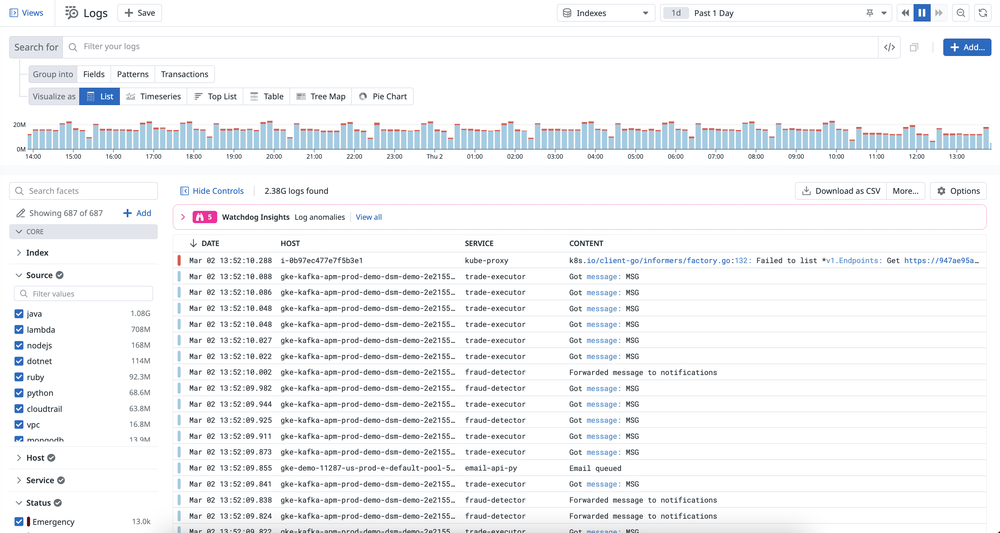
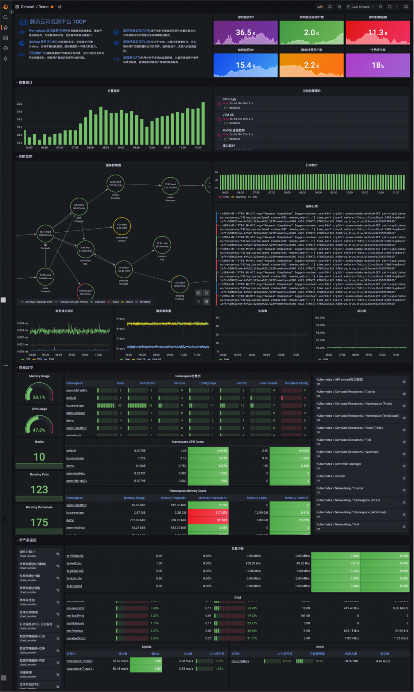
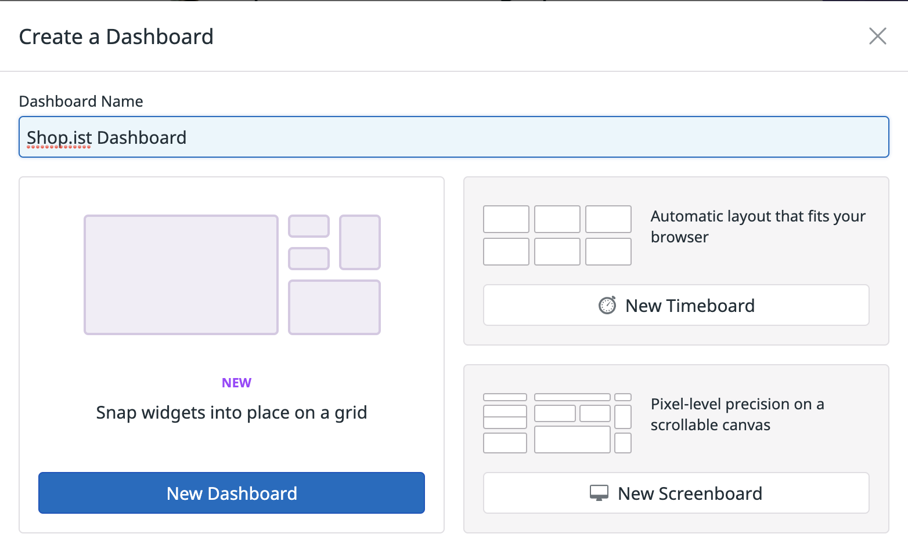
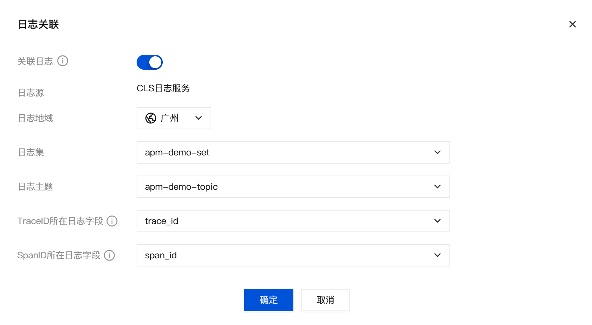
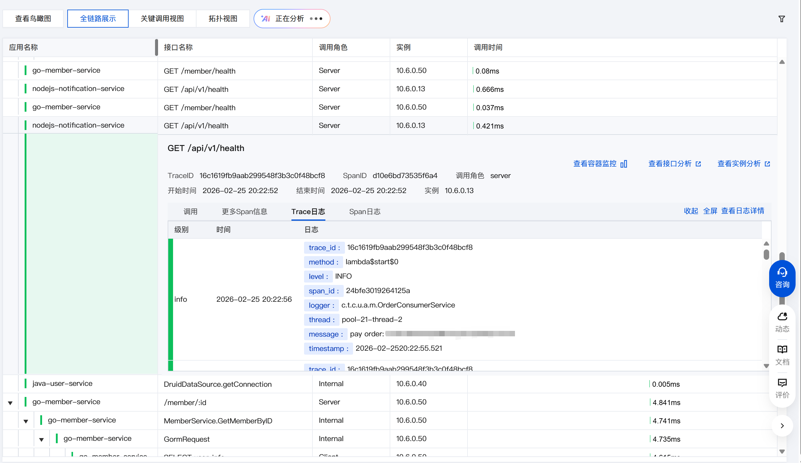
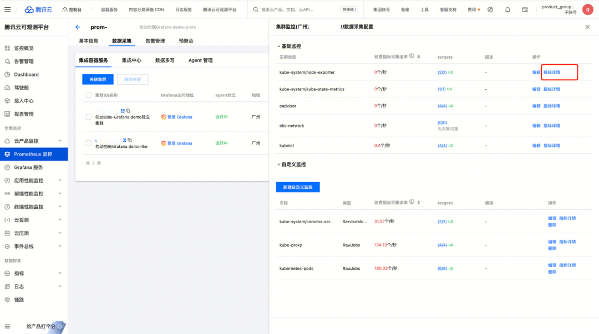

用户体验五要素竞品分析报告
基于战略层 · 范围层 · 结构层 · 框架层 · 表现层的全维度体验拆解
聚焦：产品定位 · 商业模式 · 目标用户 · 核心功能边界
功能架构图 · Function Map
| 分析维度 | 🐶 Datadog | ☁️ 腾讯云 TCOP |
|---|---|---|
| 产品定位 | 全球云原生时代统一可观测性与安全平台（Observability + Security 双引擎） | 深度集成腾讯云生态的全栈可观测平台，强调指标-链路-日志一体化 |
| 目标用户 | 全球中大型企业 SRE/DevOps 团队，重视多云/混合云统一监控 | 国内政企、互联网公司；深度使用腾讯云的开发者与运维团队 |
| 核心功能范围 | Metrics + APM Tracing + Logs + Synthetics + RUM + SIEM 安全 + 600+ 集成 | 云监控 + APM + CLS 日志 + Prometheus 托管 + Grafana 托管 + 告警管理 + AI 助手 |
| 商业模式与定价 | 按量/按模块精细化计费（主机数、日志 GB、Trace 量），成本高易失控 | 腾讯云生态阶梯定价 + 资源包预付费，本土企业性价比优势明显 |
| 差异化壁垒 | 数据打通深度：从一条报错日志直接跳到关联 Trace、再到主机状态，无需切换工具 | 云生态绑定：腾讯云 CVM/容器等数百种云产品自动接入，零配置开箱 |
聚焦：信息架构 · 导航框架 · 核心操作动线 · 页面布局模式
| 分析维度 | 🐶 Datadog | ☁️ 腾讯云 TCOP |
|---|---|---|
| 导航框架 | 【左侧全局功能导航】：以能力模块为核心（APM / Logs / Infra / Monitors），支持悬浮二级展开 | 【顶部全局导航 + 左侧二级产品树】：以产品/资源为核心，云控制台标准范式 |
| 信息架构模式 | 网状架构：日志 → Trace → 主机 → Dashboard 可任意跳转，上下文始终保持 | 树状架构：按产品/实例分层，需先进入对应产品再查监控，线性下钻路径 |
| 页面布局模式 | 以 Dashboard 为核心的网格自由布局，高度自定义；列表页左侧 Facet + 右侧结果双栏 | 传统"T"字型控制台布局：左侧菜单固定 + 右侧主内容区，表单和列表为主要容器 |
| 信息密度 | 极高。屏幕上充满微型图表、数字和状态指示，专为运维大屏/专家排障设计 | 中等。留白充足，操作引导清晰，新手上手友好，但单屏信息量受限 |
| 核心任务动线 | 告警触发 → Monitor 列表定位 → 关联 Trace 链路 → 关联 Log 上下文，全程无跳出 | 告警触发 → 告警策略 → 进入对应产品监控页 → APM 详情，需多次切换产品 |

导航模式：左侧 Facet 为搜索核心，右侧结果按 Status 颜色直观区分 OK / Alert / Warn，表格密度高，批量操作入口始终可见。

导航模式：以产品树为核心，进入告警管理需先选择对应产品，配置区相对宽松，步骤引导清晰，适合初次配置的运维人员。

信息架构特征：导航以能力（Infrastructure）为核心，Host Map 将健康状态可视化为色块，一屏看数百台机器状态，信息密度极高。

信息架构特征：资源以列表形式按层级展示，需先进入 Prometheus 产品再查看关联集群，树状导航清晰但探索路径较长。
聚焦：字 · 形 · 色 · 构 · 质 — 五维视觉深度剖析
| 视觉维度 | 🐶 Datadog | ☁️ 腾讯云 TCOP |
|---|---|---|
| 字 Typography | 无衬线体，12–14px 为主；数字等宽（Monospace）保证图表对齐；强对比度，暗色模式下白字绿/红数字 | PingFang SC + 无衬线体，14px 基础字号；标题/正文字号梯度区分明显；阅读舒适度优先 |
| 形 Form/Shape | 图表线条极细（1px），圆角小（2–4px），硬朗专业；品牌标志吉祥物（狗狗）极具辨识度 | 线性图标规范统一，图表线条适中；圆角 4–6px；企业级标准造型，中规中矩 |
| 色 Color | 品牌紫 (#6366f1) 为主色；深色模式（Dark Theme）深受工程师喜爱；告警红/黄配色鲜明，状态一眼识别 | 腾讯云蓝 (#006EFF) 为品牌色；以浅色模式为主；辅助色柔和克制，贴近商务软件审美 |
| 构 Layout | 4px 基准间距，紧凑排版；Dashboard 页几乎无空白，屏效比极大化；网格拖拽自由布局 | 8px 基准间距，相对宽松；表单/列表有充足水槽，长时间阅读不疲劳；固定结构清晰 |
| 质 Texture | 极客感 · 数据驱动 · 扁平化，专业工具氛围感强 | 商务风 · 稳重克制 · 轻微质感，大厂产品可信赖感 |

视觉特征：左侧 Facet + 右侧日志流双栏布局，字号极小但信息量极大；直方图将时间分布一览无余；状态用颜色强区分（红=Error/橙=Warn），符合工程师快速扫描习惯。

视觉特征：多图表网格布局按层级（业务/应用/中间件/系统）排列，字号适中，留白充足；腾讯蓝色标注选中状态，整体商务感强，适合管理层汇报和日常巡检。

视觉特征：品牌紫色贯穿交互重点；卡片密度适中，缩略图 + 名称 + 描述的布局让用户快速决策；整体视觉极简，无多余装饰。

视觉特征：标准表单布局，左侧菜单高亮当前页，配置项有明确标签和说明文字；整体偏传统 B 端风格，降低用户理解成本，但视觉活力不足。

视觉特征：Trace 瀑布流 + 详情 + 日志三区联动，用 Tab 切换 Trace/Span 日志，布局清晰；颜色用于区分服务名，整体配色淡雅，适合长时间深度分析。

视觉特征：弹窗式配置采用 Checkbox 列表，指标按类别分组，标签层级清晰；整体样式标准，与腾讯云控制台 Design System 保持一致，用户可快速迁移已有经验。